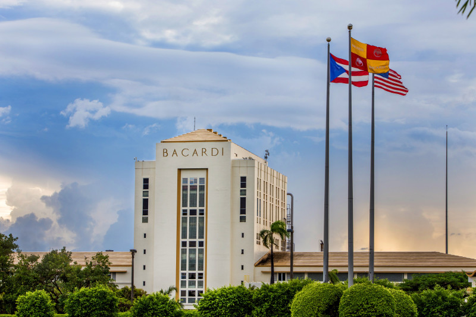

Due to its history Puerto Rico is a very culturally rich state, from festivals year round to historical landmarks, every inch of the island has a story to tell and a person to meet. The island is full of beautiful landscapes, warm people, fascinating attractions and intriguing historical cities.
Food
This maybe one of the most underrated aspects of a visit to Puerto Rico. Many believe that what will captivate them are the landscapes and historical sites but, the food in Puerto Rico is very unique as it is composed of Spanish, English and Indigenous aspects. Making Puerto Rican food very different to many foods from around the world, a particular aspect of food on the island is the amount of grease used to cook. This makes many of the dished very unhealthy but extremely delicious. In Puerto Rico’s website there is a quote from a tourist describing his first experience on the island and he states, “Heaping portions of crispy, garlicky, fried plantains; slow-roasted, succulent pork; savory rice and beans chased with a cold local beer or fruity rum cocktail, and that's just your first meal.”
Sites
The sites to be seen in Puerto Rico are one in a million, there are many locations in Puerto Rico that many would have to travel to different parts of the world to see but in Puerto Rico you can see them all in the island. Puerto Rico also offers one of the Seven Wonders of the World, “El Yunque.” El Yunque is the second oldest national park in the world after Yellowstone Nation Park. Puerto Rico also offers three of the five bioluminescent bays in the world all in different areas of the island making it accessible for tourists to visit at any time in the vacation. The island also offers tourists flamenco beach which was nominated in 2016-2018 the top six beach in the world by US today. The beauty among beaches is shared meaning that a grand majority of beaches will be pristine.

Breweries and Distilleries
Puerto Rico is also known for their great beers and rums, starting by the world renowned Bacardi. Puerto Rico has been home to Bacardi for almost seventy years, Bacardi is the largest privately owned distillery with more than 200 products that they produce on the island. There is also another rum distillery called the Serralles Distillery which is also a rum that is sold internationally. In terms of breweries there are two main one Cerveceria Puerto Rico which is the most well-known one and Ocean Lab Brewery the most luxurious one in the Caribbean. All of these factories offer tours for tourists where visitors have the chance to taste all their products and pair their products to different foods. To the left is a photo of the famouse Bacadi distillery. (Hover over factory image to see something cool)